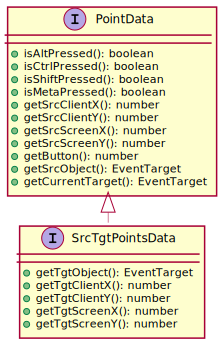
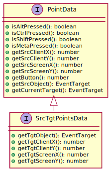
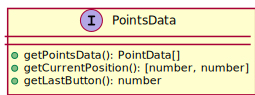
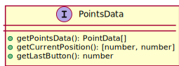

JavaFX and Maven
<dependency>
<groupId>io.github.interacto</groupId>
<artifactId>interacto-java-api</artifactId>
<version>4.3.0</version>
</dependency>
<dependency>
<groupId>io.github.interacto</groupId>
<artifactId>interacto-javafx</artifactId>
<version>4.3.0</version>
</dependency>
<dependency>
<groupId>io.github.interacto</groupId>
<artifactId>interacto-javafx-test</artifactId>
<version>4.3.0</version>
</dependency>
The library
interacto-javafx-test is dedicated to JavaFX front-end
testing
Angular and npm
npm install interactoHow to start: an example
ngAfterViewInit(): void {
buttonBinder()
.on(this.clearButton.nativeElement)
.toProduce(() => new ClearText(this.text))
.bind();
}clearButton to produce a command ClearText.
Bindings are defined in ngAfterViewInit of the component.
The binding manages the (un-)registration with the button, the creation of the command on each button click, and the move of the executed commands in a commands registry for undo/redo purposes.
A binder follows the builder pattern: it configures the binding to define how to turn the selected user interaction into commands.
The terminal routine
bind() builds the binding.
export class MyComponent implements AfterViewInit {
@ViewChild('clearbutton')
private clearButton: ElementRef;
...
} clearButton is a property of the component class
export class ClearText extends CommandBase implements Undoable {
private memento: string;
public constructor(private text: TextData) { super(); }
protected createMemento(): void {
this.memento = this.text.text;
}
protected execution(): void {
this.text.text = '';
}
public undo(): void {
this.text.text = this.memento;
}
public redo(): void {
this.execution();
}
public getUndoName(): string {
return 'Clear text';
}
}ClearText is an undoable command.
The memento preserves the former content of text data.
The binding and commands registry automatically call the methods of this command.
You can place your commands wherever you want.
We suggest grouping them into a command folder.
How to select a user interaction
clickBinder()
...
.bind();clickBinder() for a click interaction.
Routines for standard user interactions:
Routines for standard mouse-based interactions:
buttonBinder, checkboxBinder, colorPickerBinder, comboBoxBinder, spinnerBinder, dateBinder,
hyperlinkBinder, textInputBinder
Routines for standard mouse-based interactions:
clickBinder, dbleClickBinder, pressBinder, scrollBinder, dndBinder, dragLockBinder
Routines for touch interactions:
Routines for standard key-based interactions:
multiTouchBinder, tapBinder, longTouchBinder, swipeBinder, panBinder
Routines for standard key-based interactions:
keyPressBinder, keysPressBinder, keysTypeBinder, keyTypeBinder
What are
i and c in binding routines?multiTouchBinder(3)
.toProduce(i => ...)
.then((c, i) => ...)
...
.bind();toProduce and then take an argument i.
The type of i is a sub-class of InteractionData:
each user interaction exhibits specific data (we call interaction data) that routines can handle.
Here, the type of i is MultiTouchData.
multiTouchBinder(3)
.first((c, i) => ...)
.then((c, i) => ...)
.end((c, i) => ...)
...
.bind();then routine (as many other routines) take an argument c.
The argument c refers to the ongoing command.
Developers can then update the command using this argument.
How to register with widgets: the
on and onDynamic
routines
buttonBinder()
.on(this.button.nativeElement)
...
.bind();on routine identifies the widgets on which the user interaction will operate.
A binding can operate on several widgets:
buttonBinder()
.on(this.button1.nativeElement, this.button2.nativeElement)
...
.bind();longTouchBinder(2000)
.onDynamic(this.canvas.nativeElement)
...
.bind();a binding can listen for changes in the children list of a given widget. For each new child, the binding will operate on it. For each removed child, the binding will not operate on it any more.
dndBinder()
.on(this.canvas.nativeElement)
...
.bind();For example a DnD is an assembly of press, drag, release, and key type events. The user interaction registers with the strictly necessary events at a given instant: a DnD starts with a pressure, so that the interaction listens for a pressure event. The pressure must be followed by moves, so that the interaction listens for move events only, etc.
The routine
toProduce: command creationdragLockBinder()
.toProduce(d => new Translate(d.getSrcObject())
...bind();toProduce focuses on the production of a command.This routine takes as argument an anonymous function that returns a command.
The binding calls the provided anonymous function while running to create a new command.
In the example, the routine
toProduce is used to create Translate commands.
How to filter user interaction data: the
when routine (and strictStart)
longTouchBinder(2000)
.onDynamic(this.canvas.nativeElement)
.when(i => i.getSrcObject() instanceof SVGElement)
...
.bind();when routine defines a contract that the user interaction data must fulfil to
create/execute a command.
On this example when checks that the interaction operates on an SVG element contained by the
canvas.
If
when is never true, the binding does not create or executed a command.The results of
when may change during the execution of the interaction, for examples:- it may be false on interaction start to be then true, so that the command is created only
when is true to be executed on when the interaction ends;
- it may be true on interaction start to be then false, so that the command is first created (and possibly updated), but never executed as
when must be true at the end of the interaction for executing
the command.
dndBinder()
.onDynamic(this.canvas.nativeElement)
.when(i => i.getTgtObject() instanceof SVGElement)
.strictStart()
...
.bind();strictStart routine requires the routine when to return true on interaction
start.
Otherwise the binding will cancel the ongoing user interaction.For example with the code example, if the target object of the DnD is not an SVG element when the interaction starts, then the binding will cancel the DnD.
The routine
first: interaction startdragLockBinder()
.toProduce(i => new Translate(d.getSrcObject())
.onDynamic(this.canvas.nativeElement)
.first((i, c) => i.getSrcObject().setEffect(new DropShadow()))
.bind();first routine right after the instantiation of a command, when the interaction starts.It takes as arguments the current interaction data (
i) and the current command (c).The goal of
first is to update command parameters or to provide specific user feedback at the beginning of an interaction execution.For example with the example,
first applies a blurred-shadow effect on the object to be moved.
The routine
then: interaction updatedragLockBinder()
.toProduce(i => new Translate(i.getSrcObject())
.onDynamic(this.canvas.nativeElement)
.then((i, c) => c.setCoord(
c.getShape().getX() + i.getEndX() - i.getSrcX(),
c.getShape().getY() + i.getEndY() - i.getSrcY()))
.bind();then routine is called.This routine takes as arguments the current interaction data (
i) and the current command (c).The main goal of the then routine is to update the parameters of the ongoing command using the current interaction data.
In the example,
then updates the translation vector to move an object.
The routine
end, cancel, endOrCancel: Interaction Ends, Cancels, Ends or CanceledbuttonBinder()
.toProduce(_i => new Clear())
.on(this.erase.nativeElement)
....
.end((_c, _i) => this.status.nativeElement.textContent = 'Cleared')
.bind();when predicate is respected).
This routine takes as arguments the current interaction data (_i) and the current command (_c).In the example,
end changes the text message of a text widget.
dndBinder(true)
.toProduce(_i => new MoveObject())
.on(this.canvas.nativeElement)
....
.cancel(i => this.showCancelAnimation(i))
.bind();true to specify that the interaction is cancellable).Using the DnD, pressing the
escape key cancels the ongoing DnD: the interaction is stopped and reinitialized and the ongoing command aborted.So, when the interaction is cancelled the binding calls the routine
cancel.This routine takes as arguments the current interaction data (
i).In the example,
cancel calls a method for showing an animation on the concerned node.
dndBinder(true)
....
.endOrCancel(i => (i.getSrcObject() as HTMLElement).style.visibility = 'hidden')
.bind();endOrCancel (if the when predicate is respected for end).This routine takes as arguments the current interaction data (
i).This routine does not replace
end or cancel: the binding calls this routine right after end or cancel.In the example,
endOrCancel changes the style of the source object of the DnD.
The routine
log: loggingnodeBinder()
....
.log(LogLevel.interaction)
.bind();In the example the binding logs the user interaction execution.
This feature is useful for debugging a binding.
There exists three logging logging levels:
LogLevel.interactionLogLevel.commandLogLevel.bindingThe routine
stopImmediate PropagationswipeBinder(false, 200, 100, 20)
....
.stopImmediatePropagation()
.bind();stopImmediatePropagation follows the same idea that the method stopImmediatePropagation of the class Event:
it stops the propagation of the current event processed by the user interaction to the next bindings (and their user interaction)
See the documentation related to
Event.stopImmediatePropagation()
An example:
This prevents the multi-touch interaction to start while doing a long touch.
longTouchBinder(2000)
....
// Consumes the events before the
// multi-touch interaction use them
.stopImmediatePropagation()
.bind();
multiTouchBinder(2)
....
.bind();This prevents the multi-touch interaction to start while doing a long touch.
The routine
preventDefaultlongTouchBinder(2000)
// Prevents the context menu to pop-up
.preventDefault()
.bind();preventDefault follows the same idea that the method preventDefault of the class Event:
it stops the default behavior of the browser on the event.In the example, a long touch will lead the browser to show the context menu. The use of
preventDefault prevents this default behavior.
See the documentation related to
Event.preventDefault()
The routine
throttle
This routine is not implemented in TypeScript yet (even if provided by the API, this has no effect).
Anonymous command:
AnonCmdclickBinder()
.on(this.canvas.nativeElement)
.toProduce(i => new AnonCmd(() => {
console.log(i.getSrcClientX());
}))
.bind();AnonCmd class.
This command takes as argument a lambda to be called on the execution of the command.
This lambda can use the interaction data.
Undo/Redo
export class DeleteAll
extends CommandBase implements Undoable {
private mementoContent: Array = [];
public constructor(private readonly svgDoc: SVGSVGElement) { super(); }
protected createMemento(): void {
this.mementoContent =
Array.from(this.svgDoc.children);
}
protected execution(): void {
this.redo();
}
public undo(): void {
this.mementoContent
.forEach(node => this.svgDoc.appendChild(node));
}
public redo(): void {
Array.from(this.svgDoc.children)
.forEach(node => node.remove());
}
public getUndoName(): string {
return 'Delete all the SVG elements';
}
} Undoable.The command must then implements the methods
undo, redo, and
getUndoName.
The method getUndoName is useful to display a message in undo/redo widgets such as
buttons.Developers do not directly call these methods: when an undoable command is executed, the binding put it in a specific registry. Developers should write bindings that use the predefined commands
Undo and Redo,
as detailed in the examples on the right.
buttonBinder()
.toProduce(() => new Undo())
.on(this.undoButton.nativeElement)
.bind();Undo command that asks to undoable commands registry to
undo its latest undoable command.
Once undone, the registry put this command on the top of a stack of redoable commands.
buttonBinder()
.toProduce(() => new Redo())
.on(this.redoButton.nativeElement)
.bind();Redo command that asks to undoable commands registry to
redo its latest undone command.
Once redone, the registry put this command on the top of a stack of undoable commands.
Pressure, Click, Double-click
pressBinder()....bind();press interaction refers to a single mouse pressure.
clickBinder()....bind();click interaction refers to a single mouse click.
For touch devices, see the tap interaction.
dbleClickBinder()....bind();double click interaction refers to double click made using a mouse.Moving between the two clicks cancels the interaction
There is a maximal duration between the two clicks. By default this duration is 300 ms but one can change it.
For touch devices, see the
tap interaction.
DnD, Draglock
dndBinder(true)....bind();DnD refers to a Drag-And-Drop interaction.This DnD does not aim at dragging an object from a place to another one. The DnD is the sequence of a mouse pressure, followed by a set of mouse moves (at least one), that ends with a mouse release.
This is up to the developer to decide what to do using the DnD.
The DnD takes one boolean argument: is the DnD cancellable (
true) or not (false)?
To cancel a DnD, press the key escape.
dragLockBinder()....bind();A drag-lock starts by double-clicking on a source node. The user can then move the locked node until she double-clicks again at the dropping location.
To cancel a drag-lock, press the key
escape.
Using these two interactions, the variable

i in the routines (the interaction data) is of type SrcTgtPointsData.
N-clicks
clicksBinder(3)....bind();For example, a double-click refers to
clicksBinder(2).
An N-click interaction stops after a delay of 1 second without any click.For example, if one clicks two times and stops for one second, the binding based on
clicksBinder(3) does not produce any command.if one clicks three times, the same binding produces one command.
if one clicks four times and stops for one second, this binding produces one command.
Using an N-clicks interaction, the variable

i in the routines (the interaction data) is of type PointsData.
Long pressure
longPressBinder(2000)...bind();long pressure is similar to a long touch but using a mouse instead of a touch device.
The expected duration of the pressure is the argument of the binder (here 2000 ms).
Tap, Multi-touch, Touch DnD
tapBinder(3)....bind();tap interaction consists in a set of successive taps.This interaction has a single argument: the number of taps expected to end the interaction. If this number of taps is not reached after a timeout (1 second by default), the interaction is cancelled.
The timeout (re-)starts after each tap. So a user does not have to do the interaction in one second. A user have to do not next tap before one second after the last tap. A user does not have to tap on the same exact location.
multiTouchBinder(2)....bind();multi-touch interaction implies the pressure of specific number of touches.
The number of required touches is the argument of the binder (here 2 touches).A multi-touch starts when all its required touches have started. Touches can move. A multi-touch ends when the number of required touches is greater than the number of touches.
For example with the example, after the two touch pressures, if the user releases one of it the interaction stops.
touchDnDBinder()....bind();touch DnD interaction is a drag-and-drop interaction performed using one touch point.Long Touch, Swipe, Pan
longTouchBinder(2000)...bind();long touch refers to a long touch, which duration is the argument of the binder (here 2000 ms).
panBinder(true, 500, 50)...bind();pan interaction is a directional one-touch gesture.
Using one touch pressure, the user drags it in a specific direction to reach a minimal distance.The first argument is the direction:
true: horizontal pan; false: vertical pan.The second argument is the minimal distance from the starting point to the release point for validating the pan.
The last argument is tolerance rate in pixels accepted while executing the pan.
swipeBinder(true, 300, 500, 50)...bind();swipe interaction is a special kind of the pan interaction.
Using one touch pressure, the user drags it in a specific direction and with a specific velocity to reach a minimal distance.The first argument is the direction:
true: horizontal swipe; false: vertical swipe.The second argument is the minimal velocity to reach for validating the swipe. In pixels per second.
The third argument is the minimal distance from the starting point to the release point for validating the swipe.
The last argument is tolerance rate in pixels accepted while executing the swipe.
Keyboard interactions and the
with routinekeyTypeBinder(false)
.with('KeyC')
...
.bind();with.In the example, the binding operates only if the
c key is used.
This refers to the code of the keyboard event.The interaction
key type refers to a key typing.
keysTypeBinder()
.with('KeyC', 'KeyL', 'KeyE', 'KeyA', 'KeyR')
...
.bind();with routine.
In this example the user have to type the keys 'c' 'l' 'e' 'a' 'r' (in any order) to produce the
command.The
keys type interaction refers to a sequence of key typed that ends after a delay of 1
second:
if 1 second elapses after the last key typing, the interaction ends.
This permits to write a sequence and to then execute a command.
keyPressBinder(false)
...
.bind();key press interaction refers to a pressure of a key.
This interaction takes one boolean argument: does the interaction have to capture key modifier events
(true).
Button, Checkbox, Color
buttonBinder()....bind();button.
checkboxBinder()....bind();input of type checkbox.
colorPickerBinder()....bind();input of type color.
Combobox, Date, Hyperlink
comboBoxBinder()....bind();select widget.
dateBinder()....bind();hyperlinkBinder()....bind();anchor.
Text Input, Spinner, Scroll
textInputBinder()
.on(this.textarea.nativeElement)
...
.bind();text input interaction refers to the use of a text input widget (eg a textarea).
spinnerBinder()
.on(this.inputElt.nativeElement)
...
.bind();spinner interaction refers to the use of an HTML input element.
scrollBinder()
...
.bind();scroll interaction refers to scrolling.
stackoverflow questions
Undo/redo in an Angular canvas whiteboard
In this stackoverflow question we show how to create two undoable commands (to add and erase shapes), and how to use them on an HTML canvas in an Angular app.Demonstration apps
Applications that use Interacto